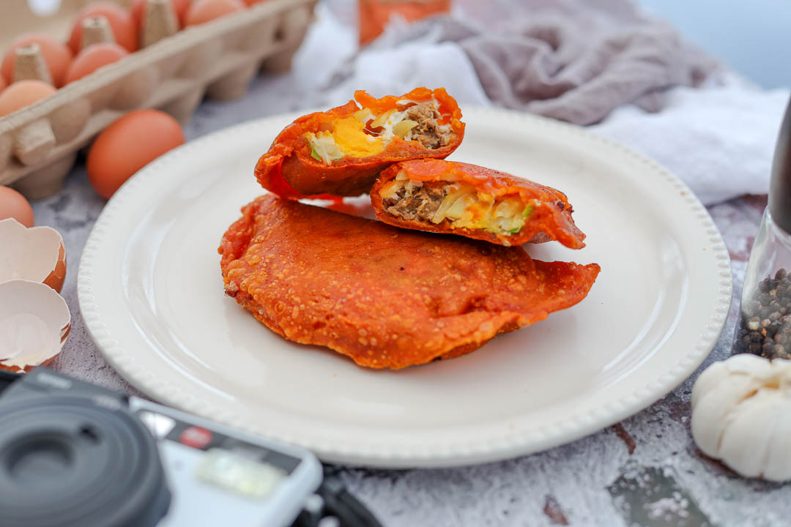
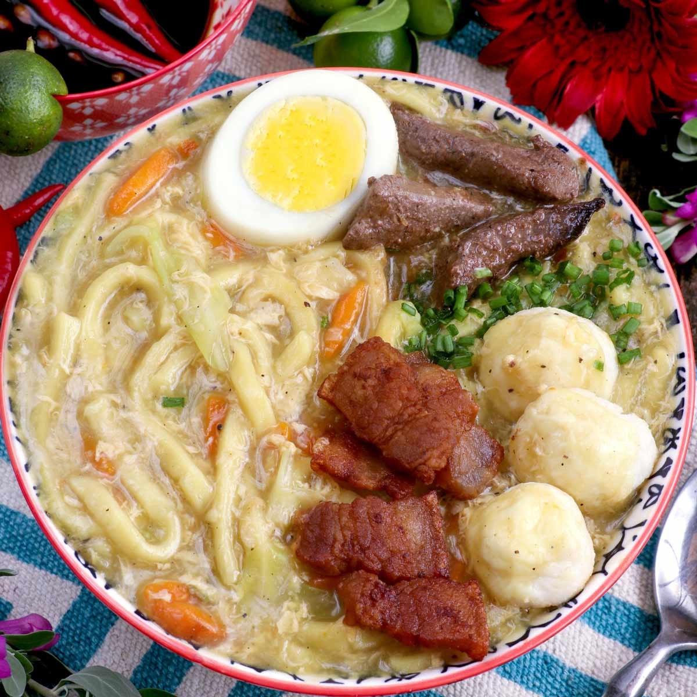
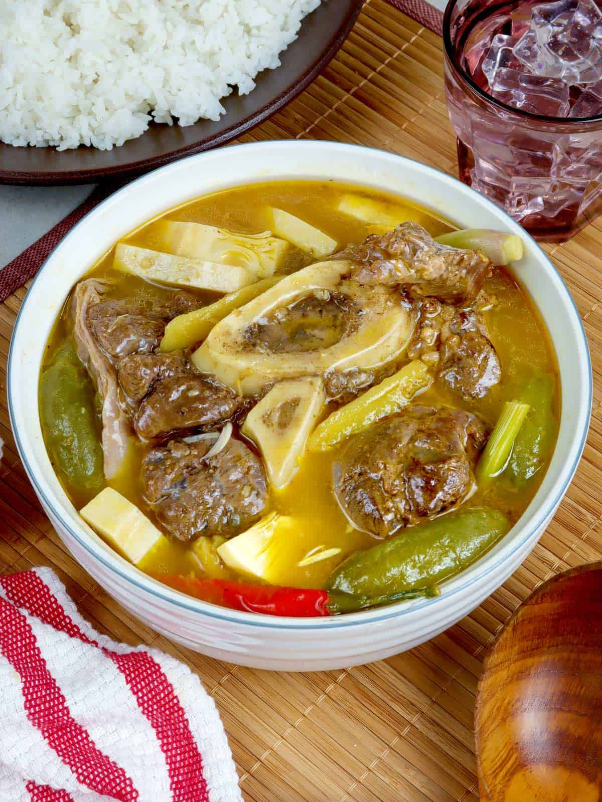
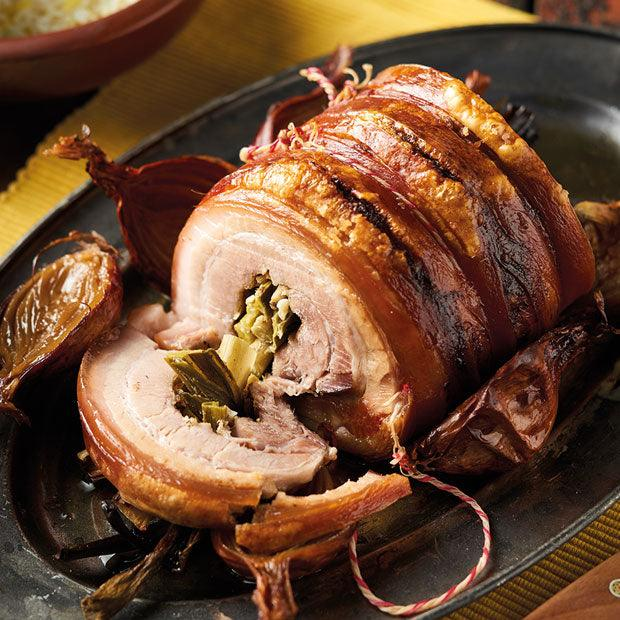
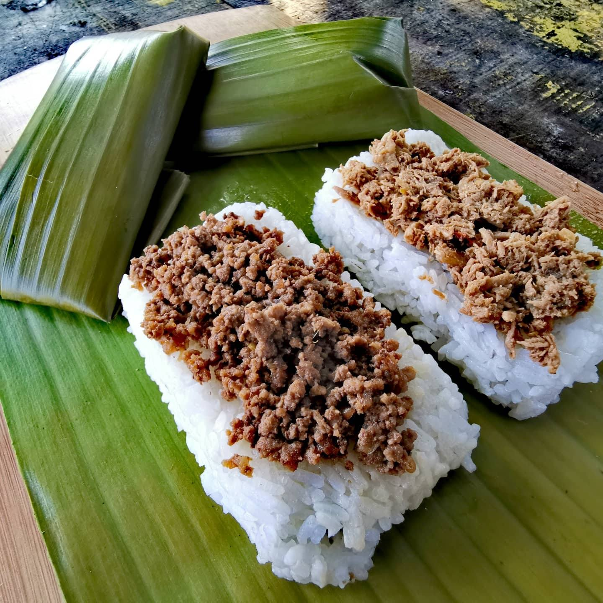
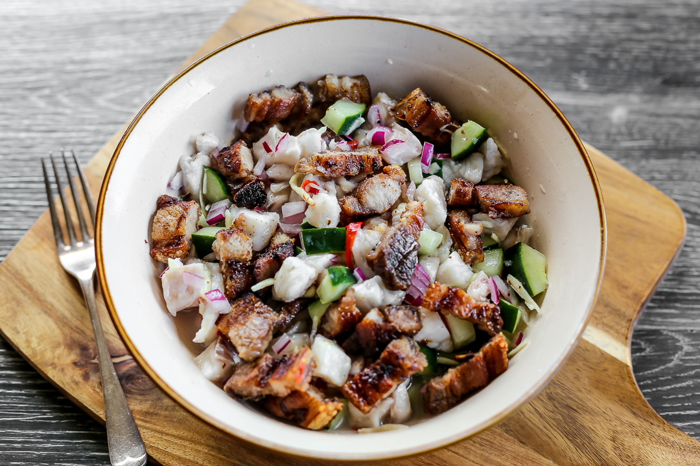
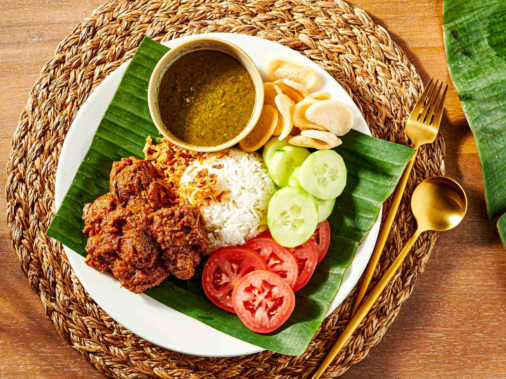

TOURIST FOOD
| HOME | PLACE | FOOD |
LUZON
|
 Ilocos EmpanadaThe Ilocos empanada is a famous Filipino street food turnover from the northern provinces. It features a crispy, bright-orange rice-flour shell stuffed with a savory mix of Ilocano longganisa (garlicky local sausage) , grated green papaya, and a whole egg, typically served with tangy cane vinegar. |
 Pancit LomiLomi (or pancit lomi) is a hearty Filipino-Chinese noodle soup featuring thick, fresh egg noodles in a rich, starchy, and garlicky broth. It is famously loaded with a variety of meats—such as pork, liver, meatballs, kikiam, and fish balls—and typically finished with a raw egg stirred directly into the hot, gooey soup. |

SisigSisig is a legendary Filipino dish made from chopped, boiled, and grilled pig parts (like the face, ears, and jowl) mixed with chicken liver, onions, and chili peppers. It is traditionally seasoned with calamansi and served sizzling hot on a cast-iron plate, often topped with a raw egg and mayonnaise. |
VISAYAS

La Paz BatchoyLa Paz Batchoy is a famous Filipino noodle soup originating from the La Paz district of Iloilo City. It consists of fresh egg noodles (miki) in a rich pork and beef broth, topped with sliced pork, pork offal (like liver and heart), crushed pork cracklings (chicharon), fried garlic, chopped spring onions, and a raw egg that cooks in the hot soup. |
 KansiKansi is a traditional Filipino beef soup from the Western Visayas region, particularly popular in Bacolod and Iloilo. Often described as a hybrid of bulalo (beef shank stew) and sinigang (sour tamarind soup), it features melt-in-the-mouth beef shanks, gelatinous bone marrow, and unripe jackfruit in a tangy, savory broth. that taste so good |
 Cebu LetchonCebu lechon is a renowned whole-roasted pig famous for its blistered, glassy, and ultra-crispy skin, perfectly contrasting with tender, juicy, and intensely flavorful meat. Seasoned heavily from the inside out with lemongrass (tanglad), garlic, spring onions, and local spices, it is so flavorful that it is typically eaten without thick liver sauce. view |
MINDANAO
 Chiken PastilPastil (also called patil or pater) is a traditional Filipino packed meal from Mindanao. It consists of steamed rice topped with shredded, sautéed meat (usually chicken, beef, or fish, locally called kagikit), neatly wrapped in a wilted banana leaf for a fragrant aroma and easy portability. |
 SinuglawSinuglaw is a popular Filipino appetizer and pulutan (drinking food) from Mindanao and the Visayas. It is a portmanteau of two cooking methods: sinugba and kinilaw The smoky, charred pork perfectly balances the bright, tangy, and spicy seafood ceviche. |
 MountApoRendang is a slow-cooked Indonesian meat dish originating from the Minangkabau region of West Sumatra. It involves stewing beef in coconut milk and a robust spice paste until the liquid evaporates, leaving the meat caramelized and coated in a rich, dark |